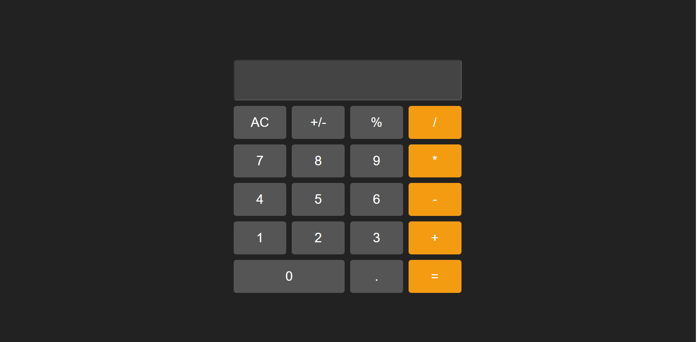

Housing Selection
Developed a program that lets users select houses at San Francisco State University.

Hi, my name is Matthew Tong, and I am a sophomore at San Francisco State University majoring in Computer Science. The reason why I chose this major was because I wanted to be like my friend, who is currently in his junior year at UC Santa Cruz majoring in computer science. He enjoys coding and doing robotics. I started to take computer science classes when I was in high school. Back then, I learned how to code basic programs and the language that I used was Python. As a freshman, I also learned Java. After I graduate, I hope I can get a job that relates to CyberSecurity. My hobbies are playing video games, watching baseball, and going out with friends.
No experience yet
Developed a program that lets users select houses at San Francisco State University.
Created a BMI calculator for the user to calculate their weight.
Created a basic Tic Tac Toe game. This game is for two users. The game won't end until it determines a winner.
Created a basic calculator.
Calculator Project 